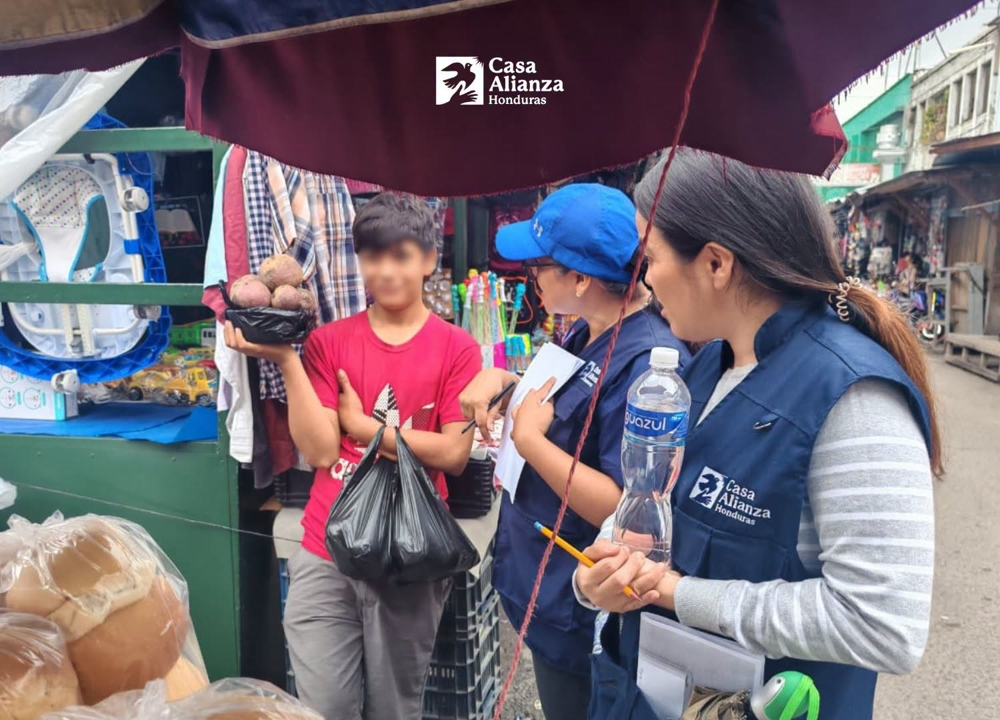

La reintegración familiar como herramienta de transformación
La reintegración familiar busca que niñas, niños y adolescentes puedan volver a un entorno familiar seguro cuando las condiciones lo permiten. Este proceso requiere acompañamiento profesional y seguimiento constante.
Casa Alianza Honduras trabaja con las familias para fortalecer la comunicación, promover relaciones saludables y crear condiciones que favorezcan el bienestar de los menores.
Cuando una familia recibe orientación y apoyo, aumenta la posibilidad de ofrecer un ambiente protector que contribuya al desarrollo integral de sus hijos y reduzca los riesgos de vulnerabilidad.
← Volver al blog